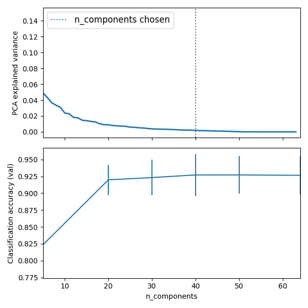

Note
Click here to download the full example code or run this example in your browser via Binder
Pipelining: chaining a PCA and a logistic regression¶
The PCA does an unsupervised dimensionality reduction, while the logistic regression does the prediction.
We use a GridSearchCV to set the dimensionality of the PCA
Out:
Best parameter (CV score=0.927):
{'logistic__C': 0.01, 'pca__n_components': 40}
print(__doc__)
# Code source: Gaël Varoquaux
# Modified for documentation by Jaques Grobler
# License: BSD 3 clause
import numpy as np
import matplotlib.pyplot as plt
import pandas as pd
from sklearn import datasets
from sklearn.decomposition import PCA
from sklearn.linear_model import LogisticRegression
from sklearn.pipeline import Pipeline
from sklearn.model_selection import GridSearchCV
# Define a pipeline to search for the best combination of PCA truncation
# and classifier regularization.
pca = PCA()
# set the tolerance to a large value to make the example faster
logistic = LogisticRegression(max_iter=10000, tol=0.1)
pipe = Pipeline(steps=[('pca', pca), ('logistic', logistic)])
X_digits, y_digits = datasets.load_digits(return_X_y=True)
# Parameters of pipelines can be set using ‘__’ separated parameter names:
param_grid = {
'pca__n_components': [5, 20, 30, 40, 50, 64],
'logistic__C': np.logspace(-4, 4, 5),
}
search = GridSearchCV(pipe, param_grid, n_jobs=-1)
search.fit(X_digits, y_digits)
print("Best parameter (CV score=%0.3f):" % search.best_score_)
print(search.best_params_)
# Plot the PCA spectrum
pca.fit(X_digits)
fig, (ax0, ax1) = plt.subplots(nrows=2, sharex=True, figsize=(6, 6))
ax0.plot(pca.explained_variance_ratio_, linewidth=2)
ax0.set_ylabel('PCA explained variance')
ax0.axvline(search.best_estimator_.named_steps['pca'].n_components,
linestyle=':', label='n_components chosen')
ax0.legend(prop=dict(size=12))
# For each number of components, find the best classifier results
results = pd.DataFrame(search.cv_results_)
components_col = 'param_pca__n_components'
best_clfs = results.groupby(components_col).apply(
lambda g: g.nlargest(1, 'mean_test_score'))
best_clfs.plot(x=components_col, y='mean_test_score', yerr='std_test_score',
legend=False, ax=ax1)
ax1.set_ylabel('Classification accuracy (val)')
ax1.set_xlabel('n_components')
plt.tight_layout()
plt.show()
Total running time of the script: ( 0 minutes 8.158 seconds)